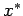
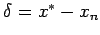
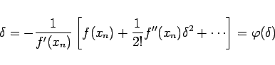

Inhalt Index DeskTop Bronstein

 Numerische Mathematik Numerische Lösung nichtlinearer Gleichungen Lösung von Polynomgleichungen Numerische Verfahren
Numerische Mathematik Numerische Lösung nichtlinearer Gleichungen Lösung von Polynomgleichungen Numerische Verfahren


Alle im Abschnitt Iterationsverfahren angegebenen Verfahren sind zur Bestimmung reeller Wurzeln von Polynomgleichungen anwendbar. Das NEWTON-Verfahren ist bei Polynomgleichungen besonders geeignet, da es rasch konvergiert und die benötigten Werte f(xn) und f'(xn) mit Hilfe des HORNER-Schemas schnell berechnet werden können. Ist der Näherungswert xn für eine Nullstelle  der Polynomgleichung f(x) = 0 schon ziemlich genau, dann kann die Korrekturgröße  mit Hilfe der Fixpunktgleichung
|  | (19.22) |
iterativ verbessert werden.